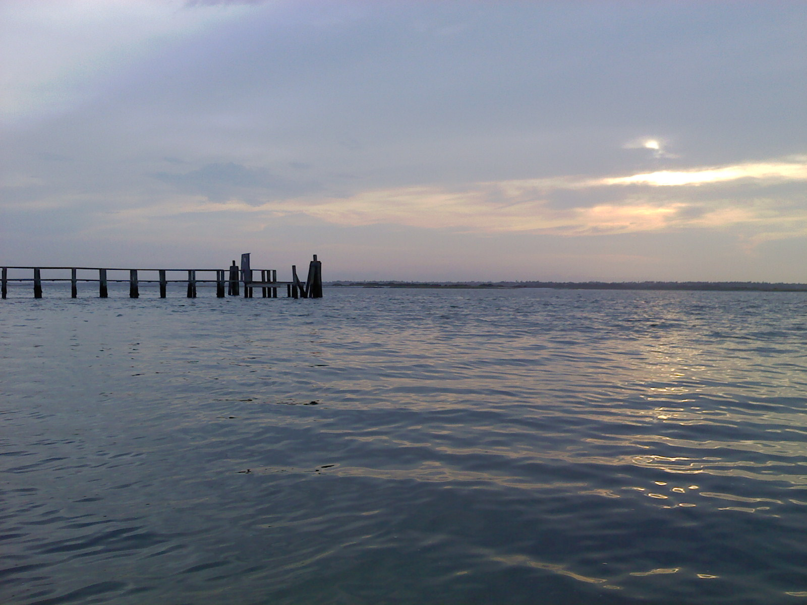

Located in downtown Topsail, the Bush Marina offers a boat ramp and slips that can be rented by night, week, or month. See the fee schedule below for pricing information.
Marina Fee Schedule Available Parking
Space is limited and clearly marked. All parking signs must be obeyed. Vehicles and/or trailers parked illegally are subject to towing at owner's expense. Parking is restricted to one vehicle per boat launched or leased boat slip as space permits. Additional truck AND trailer parking is available on the ocean side of the water tower, however, vehicles are not permitted in these areas between 1am - 5am.